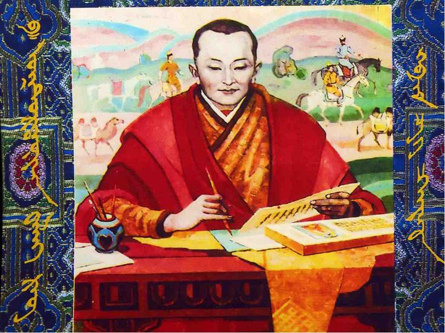

Буддизм в Калмыкии
Калмыки — единственный народ в Европе, исповедующий буддизм. Главный храм — «Золотая обитель Будды Шакьямуни» в Элисте.
Калмыки — единственный народ в Европе, исповедующий буддизм. Главный храм — «Золотая обитель Будды Шакьямуни» в Элисте.
Изобразительное искусство развивается в традициях народной живописи и скульптуры, а также в современных формах. Художники часто черпают вдохновение из буддийской и степной тематики, создавая картины, которые изображают природу, кочевую жизнь и религиозные мотивы.
Танцы играют важную роль в культурной жизни Калмыкии. Традиционные калмыцкие танцы, такие как «Тавшур» и «Ишкимдк», исполняются на национальных праздниках и фестивалях.
Музыка Калмыкии включает в себя традиционные народные песни и инструментальную музыку, исполняемую на таких инструментах, как домбра, моринхуур и ятага. Традиционные песни часто связаны с эпическими повествованиями и историческими событиями.
Литература Калмыкии представлена как устными, так и письменными произведениями. Эпические сказания и легенды передавались из поколения в поколение в устной форме.
